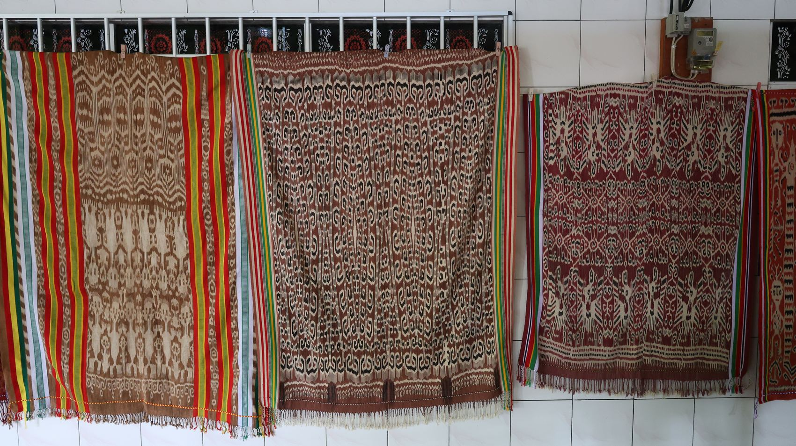
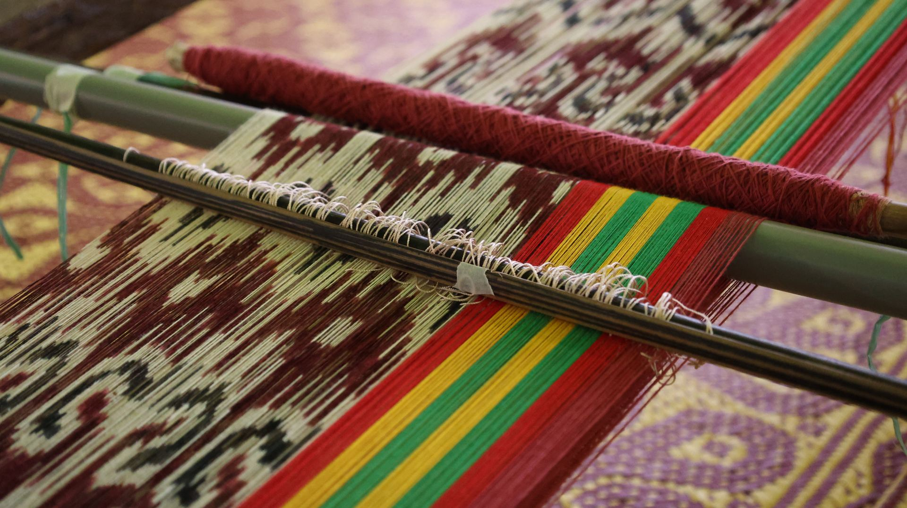
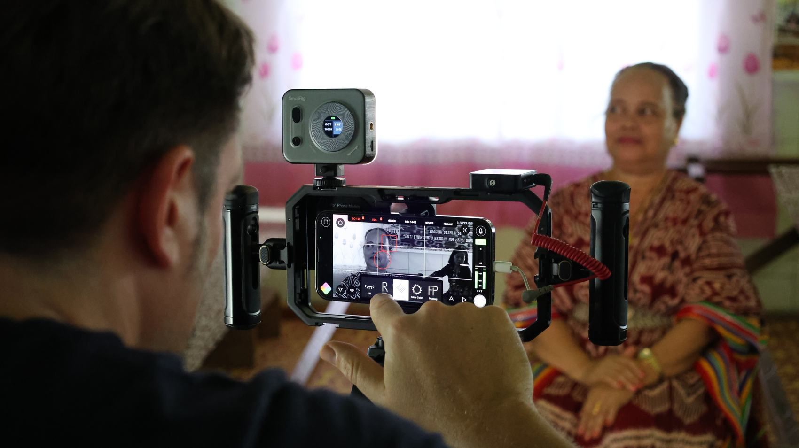
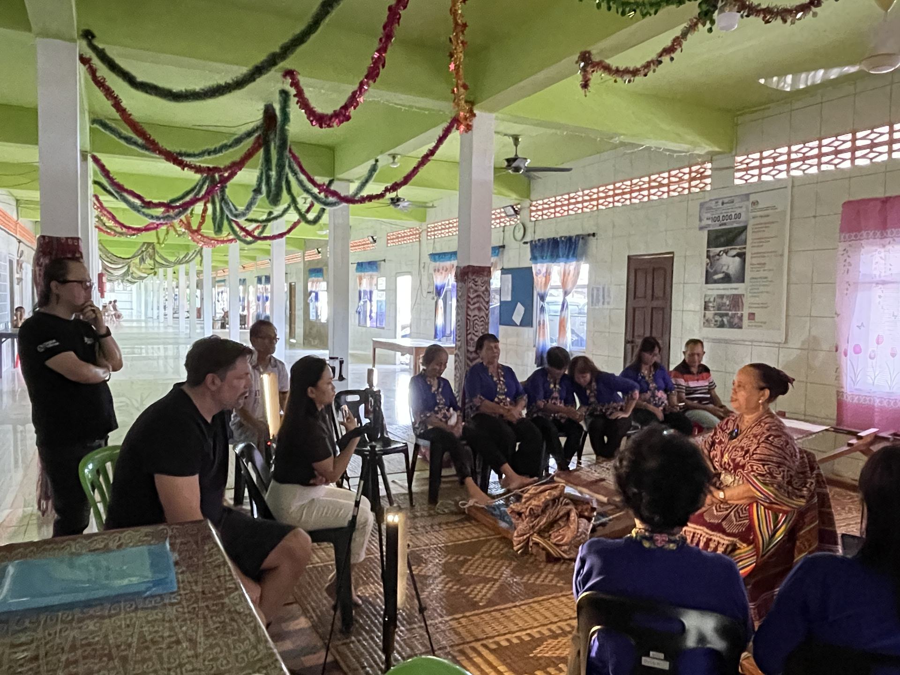
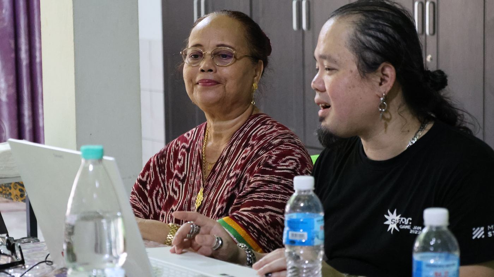

Pua Kumbu
The Listening Initiative
- Craft
- Pua Kumbu, Iban ceremonial cloth
- Recognition
- National Heritage, Malaysia (2012)
- Method
- Mobile device, XR & immersive media
People and technology, using storytelling as an interface.
This international collaborative research project brings people and technology together using storytelling as an interface. The Listening Initiative is an ongoing project developed by Creative Media for Social Change at Swinburne University of Technology Sarawak Campus.
It supports the research culture developed at the Melbourne–Sarawak Collaborative Research by bringing researchers from the Centre for Transformative Media Technologies (CTMT), the Swinburne Documentary Research Group (SDRG), and the Centre for Innovative Society (CIS) at Swinburne Sarawak together.

What are the prospects and potentials for immersive and interactive research as a community-based storytelling device?The research question

Woven ceremony, carried in cotton.
Using innovative and immersive technologies, this project documented the Iban's ceremonial cotton cloth, the Pua Kumbu, which has been recognised by the National Heritage Department of Malaysia since 2012.
In this project, the researchers filmed the stories told by the community's master weavers, focusing on the process, patterns, and design of the Pua Kumbu.

Every pattern tied and dyed by hand, thread by thread, before it is ever woven.
Living heritage, not a static record.
Capturing these traditions through immersive and interactive media, as Living Heritage does, speaks to the research's timeliness and significance, as it supports the UNESCO Convention for the Safeguarding of Intangible Cultural Heritage (UNESCO, 2019). The project presents an opportunity to document one of Sarawak's most celebrated crafts for future generations, generating community-engaged Non-Traditional Research Outputs (NTRO) through Creative Arts methods.

Generated through Creative Arts methods as a community-engaged Non-Traditional Research Output (NTRO).
Supports the UNESCO Convention for the Safeguarding of Intangible Cultural Heritage (2019).
Brings together CTMT, the Swinburne Documentary Research Group, and the Centre for Innovative Society at Swinburne Sarawak.
New knowledge, recorded on new devices.
New knowledge is recorded and presented using mobile devices, XR (Extended Reality), and immersive media as an original approach to screen production, cinematography, and screen storytelling.
The co-producers have demonstrated innovation and research excellence in similar projects through NTROs and international conference presentations.


This project safeguards intangible cultural heritage and the potential to inspire the next generation.

An initiative, not a single hand.
The Listening Initiative is developed by Creative Media for Social Change at Swinburne University of Technology Sarawak Campus, bringing together the Centre for Transformative Media Technologies, the Swinburne Documentary Research Group, and the Centre for Innovative Society — safeguarding intangible cultural heritage while inspiring the next generation to use storytelling and technology in meaningful ways.